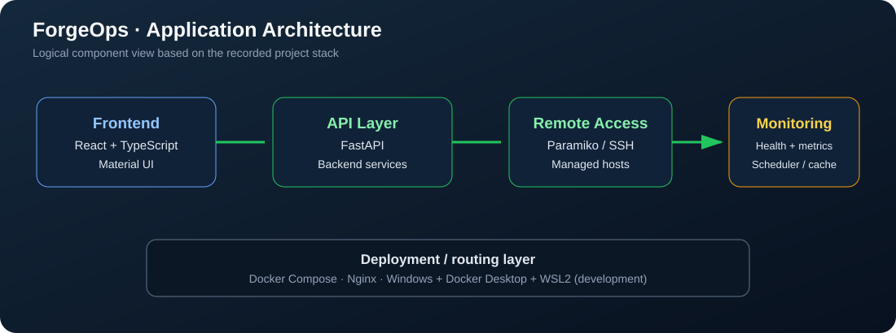

Frontend
React + TypeScript with Material UI. The interface is organized into operational workspaces, including infrastructure, monitoring, remote console, digital twins, knowledge, and Copilot areas.
A web-based infrastructure operations platform built to bring Linux administration, remote access, health visibility, infrastructure inventory, and operational workspaces into a consistent interface.
Back to featured projectsLinux and platform administration often requires switching between remote shells, monitoring views, inventory records, and operational tools. ForgeOps is being developed as a unified operations workspace that makes infrastructure state and administrative workflows easier to inspect from one application.
The engineering objective is not to replace native Linux tools. It is to provide a consistent control surface for supported workflows, with clear separation between the frontend, API, and remote infrastructure.

The diagram describes the recorded application architecture. It does not imply that every workspace or integration is complete or connected to production infrastructure.
React + TypeScript with Material UI. The interface is organized into operational workspaces, including infrastructure, monitoring, remote console, digital twins, knowledge, and Copilot areas.
FastAPI provides backend API services. Paramiko is used for SSH-based remote operations. Backend routes mediate supported requests rather than having the browser directly administer Linux hosts.
Docker Compose runs the application services. Nginx is part of the platform routing design. Local development uses Windows with Docker Desktop and WSL2; the local hostname recorded for the platform is forgeops.home.arpa.
The platform includes a Health Monitor, Metrics Collector, Metrics Cache, and Monitor Scheduler. Hysteresis thresholds are used to reduce ONLINE/OFFLINE status flapping, with a recorded 30-second refresh interval.
Central entry point to platform status and workspaces.
Application areaOperational landing area for supported administration workflows.
Application areaInfrastructure-oriented views and management workflows.
Application areaHealth and metrics views supported by the monitor, collector, cache, and scheduler services.
Monitoring components recordedSSH-oriented remote administration using the FastAPI backend and Paramiko.
SSH integration recordedA workspace for representing infrastructure resources digitally. Scope and live synchronization should be described only where verified by the current implementation.
Version 1 workspaceKnowledge-oriented support for operational reference and workflows.
Application areaAn AI-assistance workspace within the product design. This page does not claim autonomous execution or production AI integrations that have not been verified.
Application areaadmin, operator, security_analyst, data_analyst, and viewer.C:\Projects\ForgeOps.forgeops.home.arpa.A recurring issue was an Ubuntu Desktop target appearing OFFLINE in the dashboard despite being available through the Windows/WSL environment. The monitor design includes hysteresis and a refresh schedule to limit status flapping; target reachability and SSH service state still require validation against the actual runtime.
The project record confirms the stack, major workspaces, monitoring components, routing approach, and the status-flapping work. This portfolio page does not assert a successful end-to-end test for every workspace, every role, or every target host.
Next validation priorities are to verify workspace behavior against the running build, confirm role enforcement at API boundaries, exercise SSH operations against reachable test hosts, and verify monitor status transitions under intermittent connectivity.
The companion security operations lab focuses on endpoint telemetry, Wazuh alert investigation, observability, and SOC ticketing workflows.
Read the SOC-AI Forge case study →